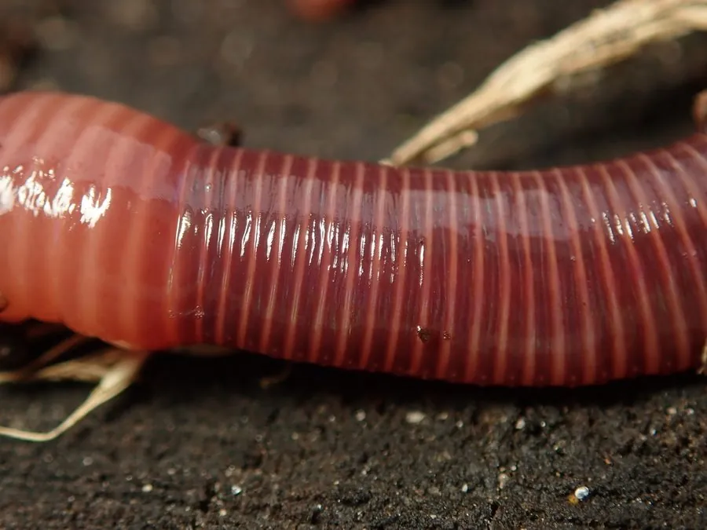

其他无脊椎动物 · 动物界
红蚯蚓 Eisenia fetida

常被用于堆肥和养殖的蚯蚓，体表有红褐与黄色相间的条纹，能快速分解有机废弃物，是著名的堆肥昆虫。
- 分类
- 门环节动物门纲环带纲目后孔寡毛目科正蚓科属爱胜蚓属
- 栖息环境
- 富含有机质的堆肥、腐叶、牲畜粪便和人工养殖床
- 地理分布
- 原产欧洲，现全球广泛养殖
- 保护级别
- 暂无评估；广泛人工养殖
物种志
红蚯蚓体长约 6–10 cm，身体细长，体色红褐至紫红，节间有黄色或浅色的环纹，因此也叫虎纹蚯蚓；体表湿润，环带位于体前部，颜色较浅，身体分节明显。
它生活在富含有机质的堆肥、腐叶和牲畜粪便中，取食腐烂的植物残体和微生物，能快速分解厨余垃圾和农业废弃物，产出蚯蚓粪有机肥，因此被广泛用于人工堆肥和蚯蚓养殖。红蚯蚓繁殖快，雌雄同体，异体受精，在适宜温度下每枚卵茧可孵出数条幼蚓。它原产欧洲，现在全球各地都有养殖；与常见的陆正蚓不同，它更喜欢富含有机质的堆肥环境，是循环农业的重要帮手。在家庭堆肥箱里，它们能把厨余变成黑褐色的蚯蚓粪。
形态与习性
- 食性取食腐烂植物残体和微生物
- 体长约 6–10 cm
- 形态体红褐色，节间有黄色环纹，像虎纹
- 繁殖雌雄同体，异体受精，卵茧孵出幼蚓
- 用途处理厨余和农业废弃物，生产蚯蚓粪
- 分布原产欧洲，现全球人工养殖
趣味知识
- 红蚯蚓体表的红黄相间环纹，让它被称为虎纹蚯蚓。
- 它能快速吃掉厨余垃圾，排出的蚯蚓粪是优质有机肥。
- 红蚯蚓繁殖快，是人工堆肥和蚯蚓养殖的主力种类。